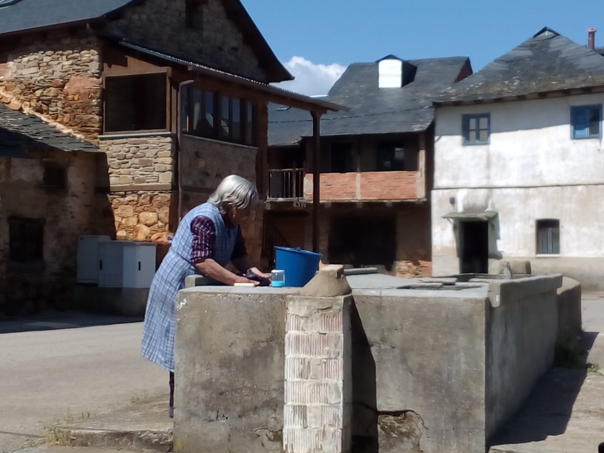

hiking
Circular · senderismo
Fácil
Guía local · 2023
Ruta descrita en la guía
Camino de la Barrera
Recorrido de 1,5 km con salida y llegada en el abrevadero. Pasa por el pozo de la Cruz, el paraje de San Benito, el Lagar del Moro, el pozo de San Antonio, las piscinas y las huertas de la Cortina.
1,5 km
1,5 km
Duración
20 min aprox.
Circular
Circular